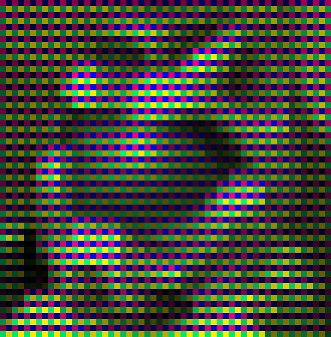

WARNING: Tons of rambling. Use caution.
This is a normal RGB image, ripped of images.google.com
somewhere:

That image is, as pretty much all other computer images, three-channel additive color. Or in
other words each pixel is defined by an ammount of red light, green light and blue light.
In this case, each channel uses 8 bits for definition, providing 256 different shades (from
black up to the color) of that color. That equals 24 bits of total color information per pixel,
or 16777216 different possible colors.
You probably can't see the individual dots of red, green and blue on your monitor, but on a
normal TV-screen, you can see it by sitting close enough.
Now, my Untitled Re-coloring Project is about four-channel subtractive color (like paint.. you
start with white, and mix color until you get the shade you want). I do this by doubling the
size of the image, and drawing my four channels as four rgb pixels that represent the shade I
want.
For example, the above image looks like this:

As you can see, the image became four times as big, and a lot brighter. The brighting comes from
using addative color to render subtractive color, and the size comes from the fact that I draw
each pixel four times.
The image is also slightly greener than the original, but I'll discuss that later.
Let's zoom in on the eye in both images.
First the original, zoomed in 2000%:

Then the new image, zoomed in 1000%:

In the lower image, you can clearly see the four colors (or channels) that are used, but I'm not
going try to name them here. You can also see that white is white in all channels, but black is
"fullcolor" in all channels. That's a result of the image being subtractive. In additive color,
black is black in all channels, and white is "fullcolor" in all channels. (in other words, black
in rgb is three black dots, while white is one red, one green and one blue)
This also explains why the new image is a lot brighter than the original. I use RGB to draw my
four channels, and additive RGB is simply not capable of producing a really dark color without
ending up with pure black.
As for the slight taint of green.. that comes from the conversion from three channels into four.
If the image had been made for four-color subtractive, it wouldn't be as tained.
Another reason is that RGB is better at displaying certain hues than others (red, green, blue,
magenta, cyan and yellow). You can see in the following two diagrams how far away "my" colors
are from those four.
How the three colors in RGB are chosen from the color wheel:

How the four colors I use are chosen from the color wheel:

Finally, I use 64 colors for each channel (or 6 bits). This adds up to 6*4=24 bits per pixel,
exactly as much as for a truecolor RGB image.
The reason I use 6 bits instead of eight is that you can fit all four channels into a palette of
256 colors (64*4=256), so the resulting images can be saved as 256-color gif images.
Also, I'm working on a real-time 8-bit mode renderer. ;)
Everything except the source image is copyright (c) 2002 Markus Persson. Most rights reserved.